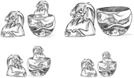
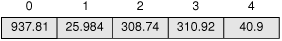
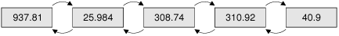
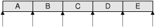
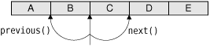
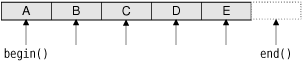

|
|

Container classes are general-purpose template classes that store items of a given type in memory. C++ already offers many containers as part of the Standard Template Library (STL), which is included in the Standard C++ library.
Qt provides its own container classes, so for Qt programs we can use both the Qt and the STL containers. The main advantages of the Qt containers are that they behave the same on all platforms and that they are implicitly shared. Implicit sharing, or "copy on write", is an optimization that makes it possible to pass entire containers as values without any significant performance cost. The Qt containers also feature easy-to-use iterator classes inspired by Java, they can be streamed using QDataStream, and they usually result in less code in the executable than the corresponding STL containers. Finally, on some hardware platforms supported by Qt/Embedded Linux, the Qt containers are the only ones available.
Qt offers both sequential containers such as QVector<T>, QLinkedList<T>, and QList<T>, and associative containers such as QMap<K, T> and QHash<K, T>. Conceptually, the sequential containers store items one after another, whereas the associative containers store key–value pairs.
Qt also provides generic algorithms that perform operations on arbitrary containers. For example, the qSort() algorithm sorts a sequential container, and qBinaryFind() performs a binary search on a sorted sequential container. These algorithms are similar to those offered by the STL.
If you are already familiar with the STL containers and have STL available on your target platforms, you might want to use them instead of, or in addition to, the Qt containers. For more information about the STL classes and functions, a good place to start is SGI's STL web site: http://www.sgi.com/tech/stl/.
In this chapter, we will also look at QString, QByteArray, and QVariant, since they have a lot in common with containers. QString is a 16-bit Unicode string used throughout Qt's API. QByteArray is an array of 8-bit chars useful for storing raw binary data. QVariant is a type that can store most C++ and Qt value types.
A QVector<T> is an array-like data structure that stores its items at adjacent positions in memory, as Figure 11.1 illustrates. What distinguishes a vector from a plain C++ array is that a vector knows its own size and can be resized. Appending extra items to the end of a vector is fairly efficient, whereas inserting items at the front or in the middle of a vector can be expensive.

If we know in advance how many items we are going to need, we can give the vector an initial size when we define it and use the [] operator to assign a value to the items; otherwise, we must either resize the vector later on or append items. Here's an example where we specify the initial size:
QVector<double> vect(3); vect[0] = 1.0; vect[1] = 0.540302; vect[2] = -0.416147;
Here's the same example, this time starting with an empty vector and using the append() function to append items at the end:
QVector<double> vect; vect.append(1.0); vect.append(0.540302); vect.append(-0.416147);
We can also use the << operator instead of append():
vect << 1.0 << 0.540302 << -0.416147;
One way to iterate over the vector's items is to use [] and count():
double sum = 0.0;
for (int i = 0; i < vect.count(); ++i)
sum += vect[i];
Vector entries that are created without being assigned an explicit value are initialized using the item class's default constructor. Basic types and pointer types are initialized to zero.
Inserting items at the beginning or in the middle of a QVector<T>, or removing items from these positions, can be inefficient for large vectors. For this reason, Qt also offers QLinkedList<T>, a data structure that stores its items at non-adjacent locations in memory, as illustrated by Figure 11.2. Unlike vectors, linked lists don't support random access, but they provide "constant time" insertions and removals.

Linked lists do not provide the [] operator, so iterators must be used to traverse their items. Iterators are also used to specify the position of items. For example, the following code inserts the string "Tote Hosen" between "Clash" and "Ramones":
QLinkedList<QString> list;
list.append("Clash");
list.append("Ramones");
QLinkedList<QString>::iterator i = list.find("Ramones");
list.insert(i, "Tote Hosen");
We will take a more detailed look at iterators later in this section.
The QList<T> sequential container is an "array-list" that combines the most important benefits of QVector<T> and QLinkedList<T> in a single class. It supports random access, and its interface is index-based like QVector's. Inserting or removing an item at either end of a QList<T> is very fast, and inserting in the middle is fast for lists with up to about one thousand items. Unless we want to perform insertions in the middle of huge lists or need the list's items to occupy consecutive addresses in memory, QList<T> is usually the most appropriate general-purpose container class to use.
The QStringList class is a subclass of QList<QString> that is widely used in Qt's API. In addition to the functions it inherits from its base class, it provides some extra functions that make the class more versatile for string handling. We discuss QStringList in the last section of this chapter (p. 290).
QStack<T> and QQueue<T> are two more examples of convenience subclasses. QStack<T> is a vector that provides push(), pop(), and top(). QQueue<T> is a list that provides enqueue(), dequeue(), and head().
For all the container classes seen so far, the value type T can be a basic type like int or double, a pointer type, or a class that has a default constructor (a constructor that takes no arguments), a copy constructor, and an assignment operator. Classes that qualify include QByteArray, QDateTime, QRegExp, QString, and QVariant. Qt classes that are derived from QObject do not qualify, because they lack a copy constructor and an assignment operator. This is no problem in practice, since we can simply store pointers to QObject types rather than the objects themselves.
The value type T can also be a container, in which case we must remember to separate consecutive angle brackets with spaces; otherwise, the compiler will choke on what it thinks is a >> operator. For example:
QList<QVector<double> > list;
In addition to the types just mentioned, a container's value type can be any custom class that meets the criteria described earlier. Here is an example of such a class:
class Movie
{
public:
Movie(const QString &title = "", int duration = 0);
void setTitle(const QString &title) { myTitle = title; }
QString title() const { return myTitle; }
void setDuration(int duration) { myDuration = duration; }
QString duration() const { return myDuration; }
private:
QString myTitle;
int myDuration;
};
The class has a constructor that requires no arguments (although it can take up to two). It also has a copy constructor and an assignment operator, both implicitly provided by C++. For this class, a member-by-member copy is sufficient, so there is no need to implement our own copy constructor and assignment operator.
Qt provides two categories of iterators for traversing the items stored in a container: Java-style iterators and STL-style iterators. The Java-style iterators are easier to use, whereas the STL-style iterators can be combined with Qt's and STL's generic algorithms and are more powerful.
For each container class, there are two Java-style iterator types: a read-only iterator and a read-write iterator. Their valid positions are shown in Figure 11.3. The read-only iterator classes are QVectorIterator<T>, QLinkedListIterator<T>, and QListIterator<T>. The corresponding read-write iterators have Mutable in their name (e.g., QMutableVectorIterator<T>). In this discussion, we will concentrate on QList's iterators; the iterators for linked lists and vectors have the same API.

The first thing to keep in mind when using Java-style iterators is that they don't point directly at items. Instead, they can be located before the first item, after the last item, or between two items. A typical iteration loop looks like this:
QList<double> list;
...
QListIterator<double> i(list);
while (i.hasNext()) {
do_something(i.next());
}
The iterator is initialized with the container to traverse. At this point, the iterator is located just before the first item. The call to hasNext() returns true if there is an item to the right of the iterator. The next() function returns the item to the right of the iterator and advances the iterator to the next valid position.
Iterating backward is similar, except that we must first call toBack() to position the iterator after the last item:
QListIterator<double> i(list);
i.toBack();
while (i.hasPrevious()) {
do_something(i.previous());
}
The hasPrevious() function returns true if there is an item to the left of the iterator; previous() returns the item to the left of the iterator and moves the iterator back by one position. Another way to think about the next() and previous() iterators is that they return the item that the iterator has just jumped over, as Figure 11.4 illustrates.

Mutable iterators provide functions to insert, modify, and remove items while iterating. The following loop removes all the negative numbers from a list:
QMutableListIterator<double> i(list);
while (i.hasNext()) {
if (i.next() < 0.0)
i.remove();
}
The remove() function always operates on the last item that was jumped over. It also works when iterating backward:
QMutableListIterator<double> i(list);
i.toBack();
while (i.hasPrevious()) {
if (i.previous() < 0.0)
i.remove();
}
Similarly, the mutable Java-style iterators provide a setValue() function that modifies the last item that was jumped over. Here's how we would replace negative numbers with their absolute value:
QMutableListIterator<double> i(list);
while (i.hasNext()) {
int val = i.next();
if (val < 0.0)
i.setValue(-val);
}
It is also possible to insert an item at the current iterator position by calling insert(). The iterator is then advanced to point between the new item and the following item.
In addition to the Java-style iterators, every sequential container class C<T> has two STL-style iterator types: C<T>::iterator and C<T>::const_iterator. The difference between the two is that const_iterator doesn't let us modify the data.
A container's begin() function returns an STL-style iterator that refers to the first item in the container (e.g., list[0]), whereas end() returns an iterator to the "one past the last" item (e.g., list[5] for a list of size 5). Figure 11.5 shows the valid positions for STL-style iterators. If a container is empty, begin() equals end(). This can be used to see whether the container has any items, although it is usually more convenient to call isEmpty() for this purpose.

The STL-style iterator syntax is modeled after that of C++ pointers into an array. We can use the ++ and -- operators to move to the next or previous item, and the unary * operator to retrieve the current item. For QVector<T>, the iterator and const_iterator types are merely typedefs for T * and const T *. (This is possible because QVector<T> stores its items in consecutive memory locations.)
The following example replaces each value in a QList<double> with its absolute value:
QList<double>::iterator i = list.begin();
while (i != list.end()) {
*i = qAbs(*i);
++i;
}
A few Qt functions return a container. If we want to iterate over the return value of a function using an STL-style iterator, we must take a copy of the container and iterate over the copy. For example, the following code is the correct way to iterate over the QList<int> returned by QSplitter::sizes():
QList<int> list = splitter->sizes();
QList<int>::const_iterator i = list.begin();
while (i != list.end()) {
do_something(*i);
++i;
}
// WRONG
QList<int>::const_iterator i = splitter->sizes().begin();
while (i != splitter->sizes().end()) {
do_something(*i);
++i;
}
This is because QSplitter::sizes() returns a new QList<int> by value every time it is called. If we don't store the return value, C++ automatically destroys it before we have even started iterating, leaving us with a dangling iterator. To make matters worse, each time the loop is run, QSplitter::sizes() must generate a new copy of the list because of the splitter->sizes().end() call. In summary: When using STL-style iterators, always iterate on a copy of a container returned by value.
With read-only Java-style iterators, we don't need to take a copy. The iterator takes a copy for us behind the scenes, ensuring that we always iterate over the data that the function first returned. For example:
QListIterator<int> i(splitter->sizes());
while (i.hasNext()) {
do_something(i.next());
}
Copying a container like this sounds expensive, but it isn't, thanks to an optimization called implicit sharing. This means that copying a Qt container is about as fast as copying a single pointer. Only if one of the copies is changed is data actually copied—and this is all handled automatically behind the scenes. For this reason, implicit sharing is sometimes called "copy on write".
The beauty of implicit sharing is that it is an optimization that we don't need to think about; it simply works, without requiring any programmer intervention. At the same time, implicit sharing encourages a clean programming style where objects are returned by value. Consider the following function:
QVector<double> sineTable()
{
QVector<double> vect(360);
for (int i = 0; i < 360; ++i)
vect[i] = std::sin(i / (2 * M_PI));
return vect;
}
The call to the function looks like this:
QVector<double> table = sineTable();
STL, in comparison, encourages us to pass the vector as a non-const reference to avoid the copy that takes place when the function's return value is stored in a variable:
void sineTable(std::vector<double> &vect)
{
vect.resize(360);
for (int i = 0; i < 360; ++i)
vect[i] = std::sin(i / (2 * M_PI));
}
The call then becomes more tedious to write and less clear to read:
std::vector<double> table; sineTable(table);
Qt uses implicit sharing for all of its containers and for many other classes, including QByteArray, QBrush, QFont, QImage, QPixmap, and QString. This makes these classes very efficient to pass by value, both as function parameters and as return values.
Implicit sharing is a guarantee from Qt that the data won't be copied if we don't modify it. To get the best out of implicit sharing, we can adopt a couple of new programming habits. One habit is to use the at() function rather than the [] operator for read-only access on a (non-const) vector or list. Since Qt's containers cannot tell whether [] appears on the left side of an assignment or not, it assumes the worst and forces a deep copy to occur—whereas at() isn't allowed on the left side of an assignment.
A similar issue arises when we iterate over a container with STL-style iterators. Whenever we call begin() or end() on a non-const container, Qt forces a deep copy to occur if the data is shared. To prevent this inefficiency, the solution is to use const_iterator, constBegin(), and constEnd() whenever possible.
Qt provides one last method for iterating over items in a sequential container: the foreach loop. It looks like this:
QLinkedList<Movie> list;
...
foreach (Movie movie, list) {
if (movie.title() == "Citizen Kane") {
std::cout << "Found Citizen Kane" << std::endl;
break;
}
}
The foreach pseudo-keyword is implemented in terms of the standard for loop. At each iteration of the loop, the iteration variable (movie) is set to a new item, starting at the first item in the container and progressing forward. The foreach loop automatically takes a copy of the container when the loop is entered, and for this reason the loop is not affected if the container is modified during iteration.
The break and continue loop statements are supported. If the body consists of a single statement, the braces are unnecessary. Just like a for statement, the iteration variable can be defined outside the loop, like this:
QLinkedList<Movie> list;
Movie movie;
...
foreach (movie, list) {
if (movie.title() == "Citizen Kane") {
std::cout << "Found Citizen Kane" << std::endl;
break;
}
}
Defining the iteration variable outside the loop is the only option for containers that hold data types that contain a comma (e.g., QPair<QString, int>).
|
|
| Converted from CHM to HTML with chm2web Pro 2.85 (unicode) |